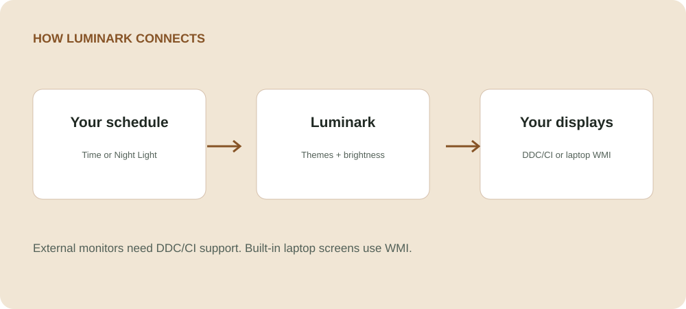

One slider, or one per screen
Adjust all displays together or fine-tune each monitor, with quick brightness presets.
Windows 11 · Display & theme control
Bring monitor brightness, Windows themes, and day-to-night automation together in one tray app. Set each display just right, then let Luminark handle the transitions.
External monitor controls require DDC/CI support. Laptop brightness uses WMI.

Adjust all displays together or fine-tune each monitor, with quick brightness presets.
Schedule light and dark themes and brightness targets, or follow Windows Night Light status.
Scroll over the tray icon for brightness. Use the flyout for supported monitor inputs, volume, sleep prevention, and screen-off controls.
Get started
Windows 11. External monitor brightness, input, and speaker controls depend on the monitor’s DDC/CI capabilities; built-in laptop brightness depends on WMI support. Source builds use the .NET SDK pinned by global.json.
Available controls vary by display and connection. Some monitors, docks, and adapters do not expose every DDC/CI function.
Inside the app

How it works

Made by Silviu Vlasceanu
Help keep Luminark moving forward with a tip, a bug report, or a contribution.